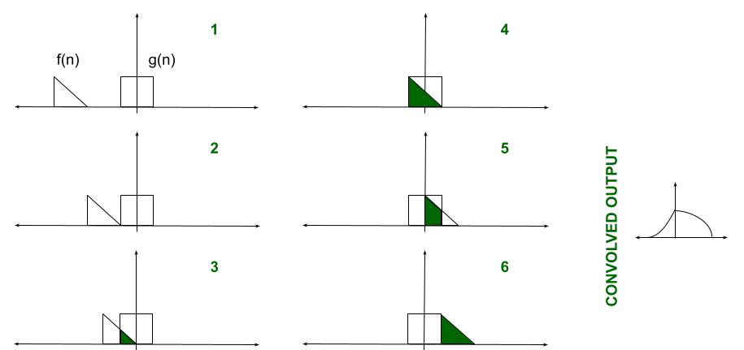
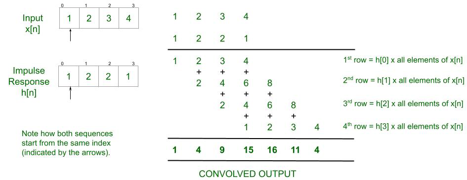

Linear Convolution
A key concept often introduced to those pursuing electronics engineering is Linear Convolution. This is a crucial component of Digital Signal Processing and Signals and Systems. Keeping general interest and academic implications in mind, this article introduces the concept of Convolution.
Convolution: When speaking purely mathematically, convolution is the process by which one may compute the overlap of two graphs. In fact, convolution is also interpreted as the area shared by the two graphs over time. Metaphorically, it is a blend between the two functions as one passes over the other. So, given two functions F(n) and G(n), the convolution of the two is expressed and given by the following mathematical expression:
y(n)= ∑k f(k)g(n−k)= ∑k g(k)f(n−k)
Linear Convolution: Linear Convolution is a means by which one may relate the output and input of an LTI system given the system’s impulse response. Clearly, it is required to convolve the input signal with the impulse response of the system. Using the expression earlier, the following equation can be formed-
y(n)= x(n)*h(n)= ∑k x(k)h(n−k)
The reason why the expression is summed an infinite number of times is just to ensure that the probability of the two functions overlapping is 1. The impulse response is time-shifted endlessly so that during some duration of time, the two functions will certainly overlap. It may seem it would be careless on behalf of the programmer to run an infinite loop – the code may continue to execute for as long as the two functions do not overlap.
Explanation:
- Take the input signal and impulse response as two separate single-row matrices.
- The first element of the impulse response is multiplied with every element of the input signal. This result is stored.
- The second element of the impulse response is multiplied with every element of the input signal. The result is shifted by one step to the right and stored.
- The above two steps are done for the remaining elements in the impulse response.
- Once all elements have been multiplied, align all the results under one another. Refer to the figure below.
- Vertically, add all the elements in each column.
- The resulting single row matrix is the convolved output.
Example:

The step-by-step values for the provided input is shown at the bottom of the page: